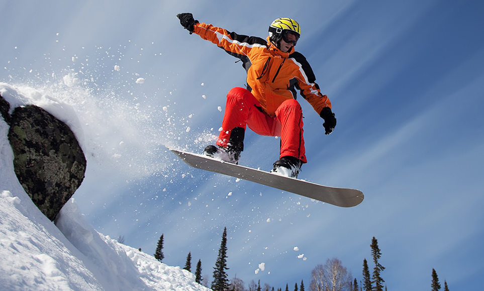

Правила сноуборда
Сноуборд: описание, виды, правила
Получившийся вид спорта начал быстро набирать популярность. Большое влияние на его развитие оказали Димитрий Милович, Джейк Бёртон (основатель компании Burton Snowboards), Том Симс (Sims Snowboards), Майк Олсон (Mervin Manufacturing). РЕКЛАМА В 1979 году прошел первый Мировой чемпионат по снерфингу. Одним из участников данного соревнования был Джейк Бёртон, который немного усовершенствовал свою доску, добавив к ней крепления. Из-за того, что снаряд Бёртона отличался от остальных, ему пришлось участвовать отдельно от всех остальных райдеров. Будучи единственным участником, он без труда выиграл этот конкурс. Согласно такой классификации, всего у сноубордов три вида:
- доски форм Directional
- Twin
- Directional-Twin
Подбор сноуборда по росту, весу и стилю катания.
| Вес(кг) | Рост(см) | Длина сноуборда |
|---|---|---|
| 152 | 45-59 | 139-145 |
| 155 | 45-64 | 139-147 |
| 157 | 50-68 | 142-150 |